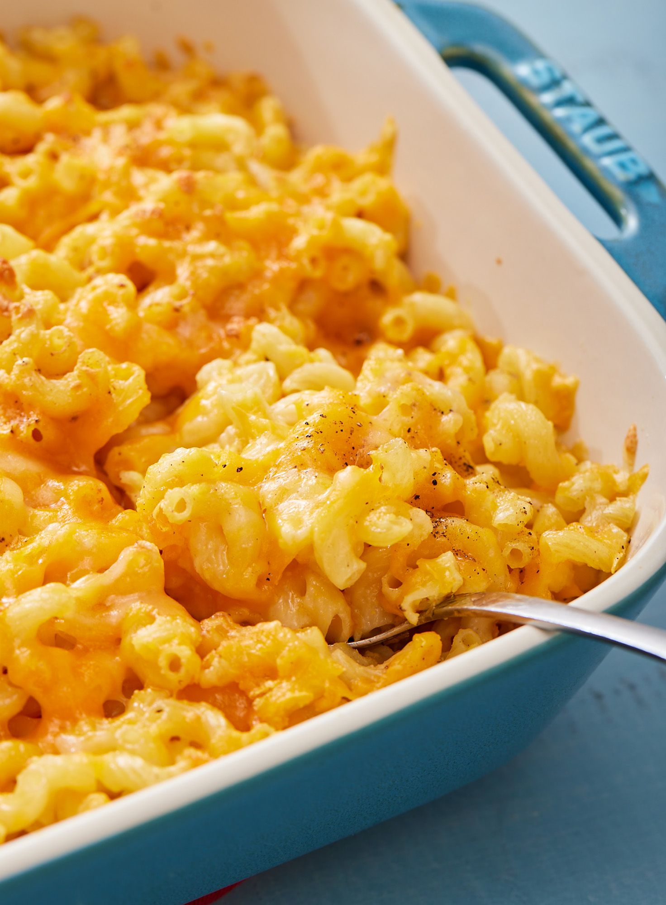

Mac and Cheese Recipe
Serves 6-8
Ingredients:
- 2 cans of Cheddar Cheese Soup
- 2 cans of Evaporated Milk
- 2 sticks of Salted Butter
- 2 tablespoons of Worcestershire Sauce
- 1 pack of Sazon
- 3 blocks of Sharp Yellow Cheddar Cheese
- 3 blocks of Sharp White Cheddar Cheese
- 1/2 box of Elbow Macaroni
How to Make:
- Preheat oven to 375*
- Put Chedder Cheese Soup, Evaporated Milk, Butter, Worchestershire Sauce, and Sazon into a pot and put on a low flame until the sauce thickens.
- Boil and cook Elbow Macaroni
- Cut blocks of Cheddar Cheese into half inch thick slices
- Layer the pan in the following order: Sauce, Cheese Slices, Elbow Macaroni. Repeat this until the macaroni runs out.
- Put extra cheese on top and put it in the oven for 45-60 minutes or until cheese on the top browns
